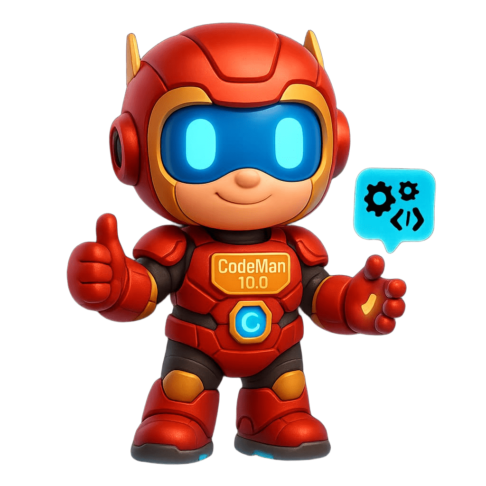
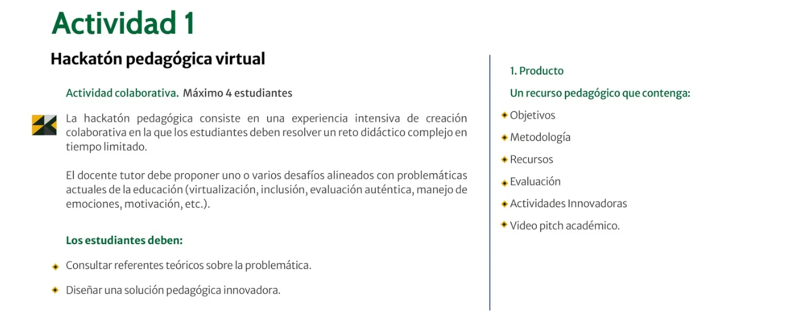

Objetivos
Fortalecer la memorización y aplicación de las tablas de multiplicar mediante retos lúdicos y digitales.
Actividad 1 · Hackatón pedagógica virtual
Ayuda a CodeMan 10.0 a recuperar la memoria de las tablas de multiplicar por medio de juegos, videos, canciones, retos y una batalla final interactiva.

Producto pedagógico
La página organiza los insumos de la secuencia didáctica en una aventura infantil. Los estudiantes avanzan por estaciones, practican, cantan y aplican la multiplicación en situaciones de la vida cotidiana.
Fortalecer la memorización y aplicación de las tablas de multiplicar mediante retos lúdicos y digitales.
Aprendizaje basado en retos, gamificación narrativa, trabajo colaborativo y evaluación formativa.
Kahoot, LearningApps, videos, canción de la tabla del 8, Genially y página web centralizadora.
Seguimiento por misiones y batalla final para resolver multiplicaciones y problemas matemáticos.
Ruta de aprendizaje
Cada misión activa una forma distinta de aprender: juego, video, memoria visual, música, problemas y cierre reflexivo.
Reto inicial para activar saberes previos y detectar cómo está el grupo antes de iniciar la aventura.
Abrir KahootVideo narrativo para presentar el conflicto: Olvidín quiere borrar la memoria de las tablas.
videos/villano-olvidin.mp4
Juego interactivo para practicar memoria visual, concentración y reconocimiento de resultados.
Abrir actividadActividad musical para aprender con ritmo, repetición, palmas y participación corporal.
videos/cancion-tabla-8.mp4
Solución de multiplicaciones y problemas matemáticos para aplicar lo aprendido en situaciones cotidianas.
Abrir evaluación finalLa derrota de Olvidín no es solo el final del juego: es la evidencia de que los estudiantes pueden aprender matemáticas con emoción, colaboración y confianza.
Conclusiones
La introducción del villano Olvidín transforma el aprendizaje abstracto de las tablas de multiplicar en un propósito tangible y lúdico.
El uso de Kahoot o Quizizz permite mapear conocimientos previos, reducir la ansiedad matemática y ofrecer un punto de partida seguro.
Las misiones 7, 8 y 9 combinan memoria visual, canal auditivo-rítmico y resolución de problemas lógicos para atender diferentes estilos de aprendizaje.
La Batalla Final permite aplicar lo aprendido en problemas cotidianos, demostrando que multiplicar ayuda a resolver situaciones del entorno.
El cierre se vive como el clímax de la aventura, no como un examen punitivo, fortaleciendo la autoeficacia y el recuerdo escolar positivo.
Video pitch académico
Espacio para presentar el problema educativo, la solución gamificada, los recursos utilizados y la forma de evaluación.
videos/pitch-academico.mp4
Referencias
Graham, C. R. (2006). Sistemas de aprendizaje combinado: definición, tendencias actuales y direcciones futuras.
Fouz-González, J., & de-la-Calle, C. (2020). Gamificación y flipped learning en la enseñanza de las matemáticas en Educación Primaria. Revista Electrónica de Investigación Educativa.
Moreira, M. A. (2017). Aprendizaje significativo crítico y tecnologías de la información y comunicación.
Deterding, S., Dixon, D., Khaled, R., y Nacke, L. (2011). De los elementos del diseño de juegos a la ludicidad: definiendo la gamificación.
Evidencia
